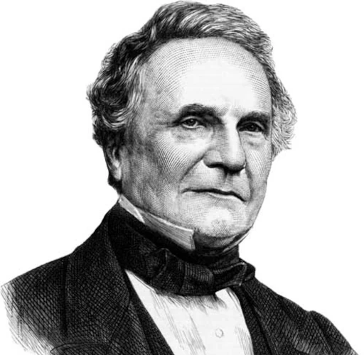

Charles Babbage
Born: December 26 1791
Became famous in 1822
Charles Babbage became known in 1822 with his design of the "Difference Engine". This mechanical calculator was a revolutionary step forward in the development of computers. Babbage's introduction of the concept of programmable machines laid the foundation for modern computer systems.
Ada Lovelace
Born: December 10 1815
Became famous in 1843
Ada Lovelace wrote the first computer program for Charles Babbage's Analytical Engine in 1843. Her work was groundbreaking because she understood the potential of this machine and developed concepts of programming and software that were far ahead of her time.
Grace Hopper
Born: December 9 1906
Became famous in 1952
Grace Hopper gained fame in 1952 due to her pioneering work in computer technology. She was a key figure in the development of the UNIVAC I, one of the first programmable computers. Hopper is also honored for inventing the first compiler, which laid the foundation for modern programming languages.

William Shockley
Born: Febuary 13 1910
Became famous in 1947
William Shockley became known in 1947 when he, along with John Bardeen and Walter Brattain, invented the transistor. This groundbreaking discovery formed the basis for modern electronics and enabled the development of integrated circuits.

Gordon Moore
Born: January 3 1929
Became famous in 1965
In 1965, Gordon Moore formulated Moore's Law. This prediction stated that the number of transistors on an integrated circuit would double every two years. This insight drove the rapid growth and evolution of the semiconductor industry.
Steve Wozniak
Born: August 11 1950
Became famous in 1976
Steve Wozniak, also known as "Woz," rose to prominence in 1976 as a co-founder of Apple with Steve Jobs. Wozniak's technical genius and engineering prowess were instrumental in the creation of the Apple I, marking the beginning of Apple's journey to become a technological powerhouse. His innovative designs continue to influence the world of computing and technology.

Steve Jobs
Born: Febuary 24 1955
Became famous in 1976
Steve Jobs gained widespread recognition in 1976 as a co-founder of Apple, alongside Steve Wozniak. Their collaboration revolutionized personal computing with the launch of the Apple I. Jobs' visionary leadership and design sensibilities played a pivotal role in Apple's success, shaping the company's iconic products and brand identity.
Bill Gates
Born: October 28 1955
Became famous in 1975
Bill Gates became known in 1975 when he co-founded Microsoft with Paul Allen. They developed software for the Altair 8800, one of the first personal computers. Gates was a visionary who paved the way for the personal computer revolution.

Kevin Mitnick
Born: August 6 1963
Became famous in 1980 - 1990
Kevin Mitnick became infamous in the 1980s and 1990s as one of the most sought-after hackers globally. Renowned for his unparalleled hacking skills, he executed complex and audacious attacks on security systems. Mitnick's exploits brought attention to the vulnerabilities of early computer networks and underscored the critical importance of cybersecurity in the digital age.
Rich Skrenta
Born: June 6 1967
Became famous in 1982
n 1982, at the age of fifteen, Rich Skrenta gained notoriety by writing the first known computer virus, named "Elk Cloner". This early example of malicious software spread through infected floppy disks, marking a significant milestone in the history of computer security and viruses. Skrenta's creation highlighted the need for robust cybersecurity measures in the emerging digital landscape.
Linus Torvalds
Born: December 28 1969
Became famous in 1991
Linus Torvalds gained international recognition in 1991 when he created and shared the Linux kernel, forming the foundation of the Linux operating system. His decision to make Linux open source fostered a vast community of developers, contributing to the evolution and widespread adoption of this influential operating system. Torvalds' visionary approach revolutionized the landscape of computing, offering a powerful, flexible, and freely accessible alternative to proprietary software.

Larry Page
Born: March 26 1973
Became famous in 1998
Larry Page gained fame in 1998 as a co-founder of Google, working closely with Sergey Brin. Their collaboration revolutionized online search. Page's expertise in algorithms and information retrieval played a pivotal role in Google's success. His innovative approach shaped the digital landscape, influencing how we access and interact with information on the internet.
Sergey Brin
Born: August 21 1973
Became famous in 1998
Sergey Brin gained worldwide recognition in 1998 as a co-founder of Google, alongside Larry Page. Their partnership revolutionized internet search, introducing unprecedented efficiency. Brin's expertise in algorithms and data mining was instrumental to Google's success. His innovative contributions reshaped how we navigate and engage with online information, leaving an indelible mark on the digital era.
Chad Hurley
Born: January 24 1977
Became famous in 2005
Chad Hurley became widely known in 2005 as a co-founder of YouTube, a platform that revolutionized the way people share and consume videos. His visionary role in creating a user-friendly video-sharing platform transformed internet culture, providing a global stage for content creators and influencers alike.
Steve Chen
Born: August 25 1978
Became famous in 2005
Steve Chen gained widespread recognition in 2005 as a co-founder of YouTube, alongside Chad Hurley and Jawed Karim. Their brainchild transformed the digital landscape by providing a seamless platform for sharing and viewing videos. Chen's ingenuity and technological expertise played a crucial role in shaping the way we engage with visual content online, leaving an enduring mark on internet culture.?

Jawed Karim
Born: october 28 1979
Became famous in 2005
Jawed Karim rose to prominence in 2005 as a co-founder of YouTube, alongside Chad Hurley and Steve Chen. Their brainchild revolutionized online video sharing, providing a user-friendly platform for creators worldwide. Karim's contributions reshaped the digital landscape, offering a global stage for a diverse array of content creators and influencers.

Mark Zuckerberg
Born: May 14 1984
Became famous in 2004
Mark Zuckerberg became globally renowned in 2004 when he co-founded Facebook with fellow students. This venture transformed social networking, connecting people across the world. Under Zuckerberg's leadership, Facebook evolved into one of the largest social media platforms, impacting how billions interact and share information online. His innovative approach fundamentally changed the way we connect and communicate in the digital age.